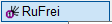
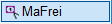

 ")
")
Beschriftung von Linien und Kreisen als Stabstahl- bzw. Mattenposition. Verwenden Sie diese Art der Beschriftung nur, wenn Harfe und Fächer nicht benutzt werden können.
Stabstahl = [RuFrei]; Matten = [MaFrei].
|
Tipps: |
|
·Die Darstellung der Positionierung können Sie vorab im DefPos-Dialog einstellen. [Formst | BiPos → DefPos]. ·Die Positionierungen der Verlegungen der Varianten werden mit Stil-Nr. 1 und den einfachen Strichen als Mitten- und Endsymbole ausgeführt. |

So wird's gemacht:
§Klicken Sie ein Element in der Darstellung der verlegten Bewehrung mit Linksklick an oder geben Sie die Positionsnummer direkt ein. [Pos.]
Voraussetzung ist, dass diese Nummer auf dem Plan vorhanden ist.
§Geben Sie einen Winkel ein und bestätigen Sie mit der Eingabetaste oder nutzen eine der unter der Abfrage stehenden Ausrichtungsoptionen. [Textrichtung].

|
||||||


§Bewegen Sie das Positionsrechteck an die gewünschte Stelle und legen Sie es mit Linksklick ab. [Lage].
§Um Linien vom Positionsrechteck aus zu zeichnen, klicken Sie die entsprechenden Linien oder Kreise der Verlegung an. [Linie(n)].
Es werden nur Elemente akzeptiert, die der Positionsnummer entsprechen. Sie können die Zeigerlinien schrittweise mit  rückgängig machen.
rückgängig machen.
§Beenden Sie das Hinzufügen von Linien mit Rechtsklick.
§Führen Sie einen der folgenden Schritte aus:
a)Geben Sie einen Ergänzungstext ein und bestätigen Sie. [Ergänzungstext (mit - überspringen)]. b)Die vorgeschlagene Anzahl wird aus der Zahl der Zeigerlinien übernommen: Wählen Sie aus der Liste den entsprechenden Ergänzungstext aus, indem Sie diesen anklicken. c)Bestätigen Sie die Eingabe mit Rechtsklick. d)Wenn kein Ergänzungstext geschrieben werden soll, geben Sie "-" ein und bestätigen Sie. |
§(Optional) Kommentar hinzufügen: [Textlage].
Sie können hinter den Ergänzungstext noch einen Kommentar setzen (z. B. "oben und unten").
Um einen Kommentar hinzuzufügen: §Klicken Sie auf die Schaltfläche Kommentar unter der Abfrage. [Textlage]. §Geben Sie einen Text ein und bestätigen Sie mit der Eingabetaste oder Rechtsklick. [Kommentar]. Sie können aus der Auswahlliste einen Favoritentext oder einen der 10 zuletzt eingegebenen Texte durch Anklicken in die Eingabezeile übernehmen und weiterbearbeiten. Wenn Sie einen bestimmten Text aus der Zeichnung übernehmen möchten, klicken Sie diesen an. Mit
§Legen Sie die Lage des Kommentartextes bezogen auf den Ergänzungstext fest. Sie können den Text über, unter oder neben den Ergänzungstext setzen und dabei die Ausrichtung bestimmen. [Textlage]. Der blaue Strich im Icon entspricht der Lage des Kommentartextes. Am Cursor wird eine Vorschau der ausgewählten Lage angezeigt.
Wenn Sie den Kommentartext bearbeiten möchten, klicken Sie die Schaltfläche Kommentar erneut an. |

 rechts neben der Eingabe können Sie Sonderzeichen einfügen.
rechts neben der Eingabe können Sie Sonderzeichen einfügen.
§Legen Sie den Ergänzungstext an der gewünschten Stelle ab. [Textlage].
Wenn Sie den Text horizontal zum Positionsrechteck bewegen, rastet dieser im Bereich der Rechteck-Mitte ein, wodurch Sie den Text mittig positionieren können.